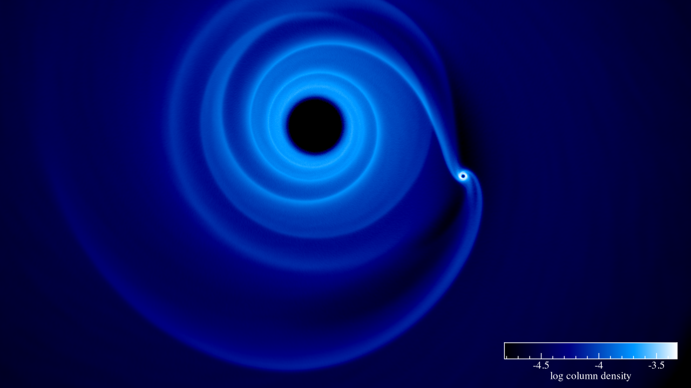
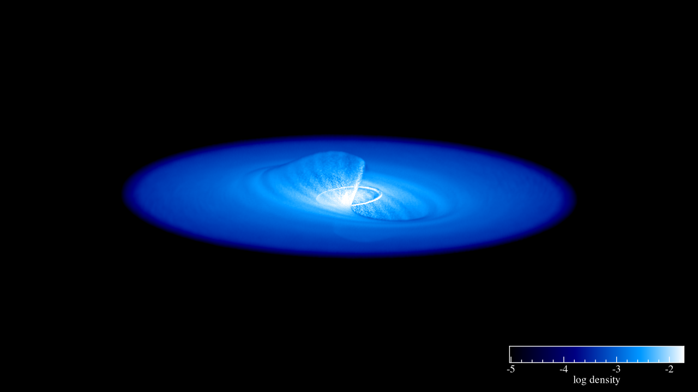

An astrophysical code for AMR & SPH on GPU clusters
Description
An general purpose code tu perform hydrodynamical simulations with various numerical methods. This code is platform agnostic, meaning that it can run on a laptop up to a multi-GPU cluster
The code works using MPI with SYCL
Download the code
On Github : Link
Documentation
Shamrock documentation : Link
C++ API documentation : Link
Python module documentation : Link
Status
First paper accepted in MNRAS (see Publications)
Exemple of simulations
A protoplanetary disc with a planet :

Lense-thiring precesion :
